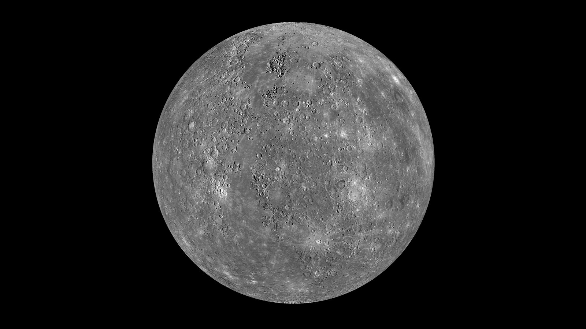
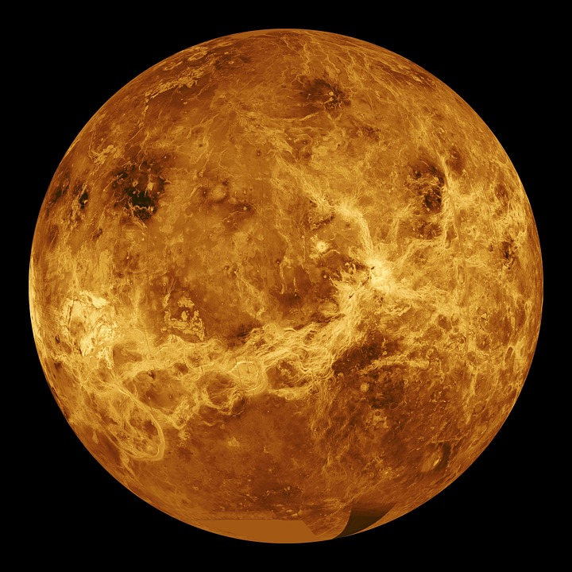
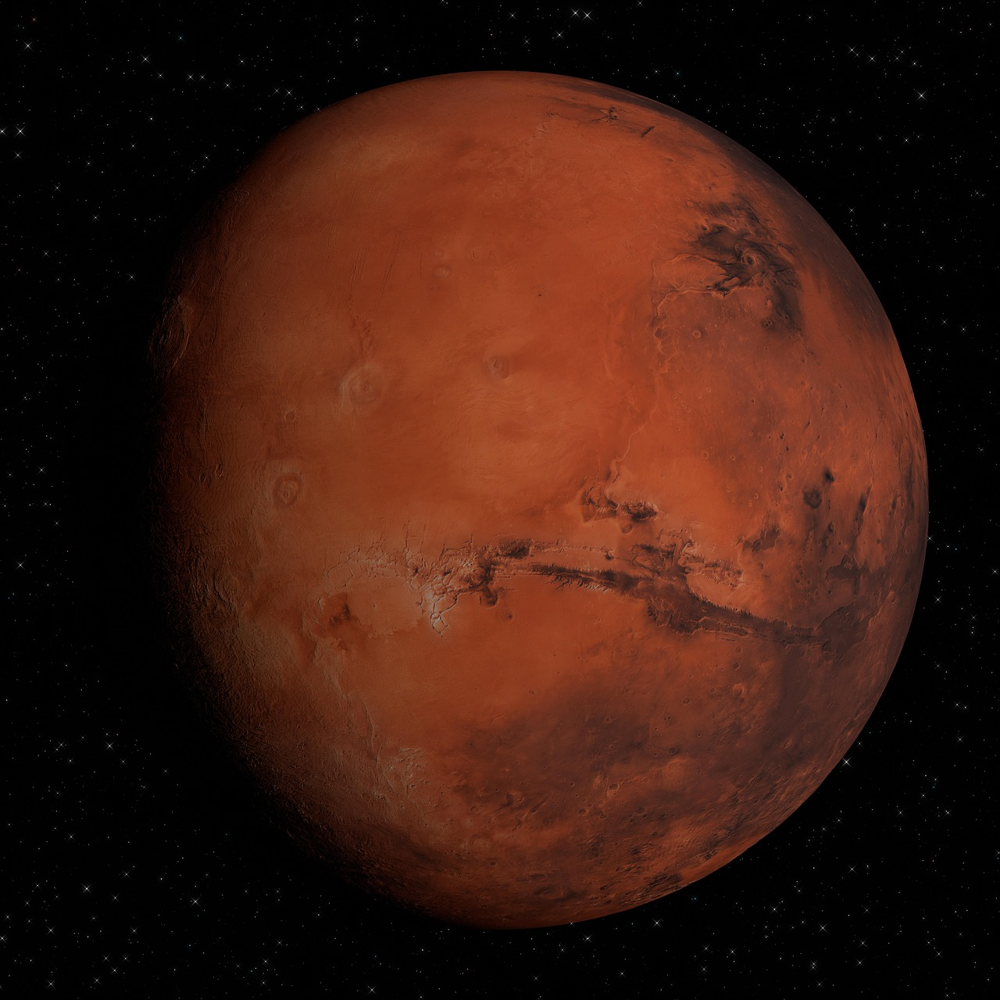
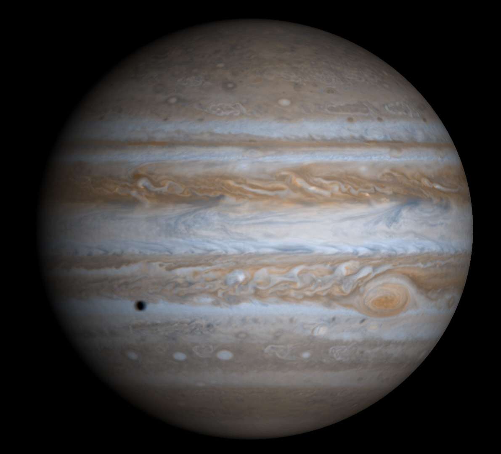
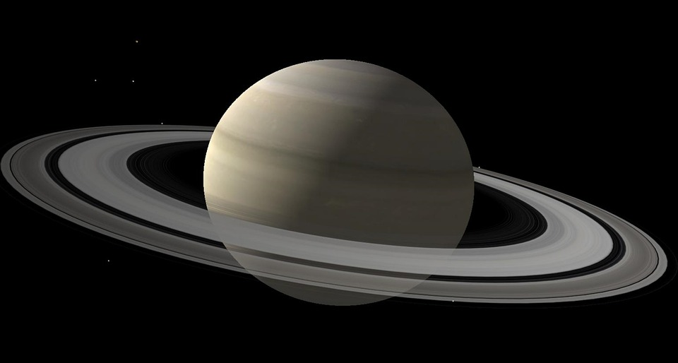
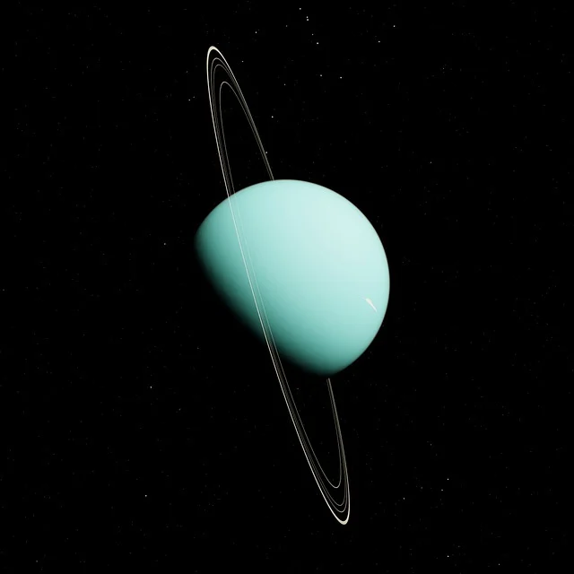
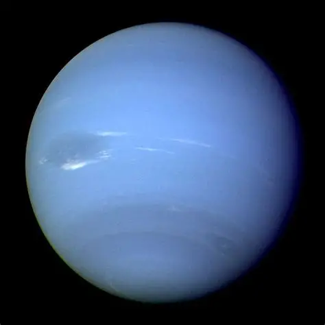

태양계
우리 태양계는 중심에 있는 항성인 태양과 그 인력에 이끌려 공전하는 대형 행성 8개, 왜소행성, 그리고 수많은 위성과 소행성, 혜성 등으로 이루어져 있습니다. 약 46억 년 전 거대한 분자운이 중력 붕괴를 일으키면서 형성되었습니다.
태양계 행성은 성분에 따라 암석으로 이루어진 지구형 행성(수성, 금성, 지구, 화성)과 가스 및 얼음으로 이루어진 목성형 행성(목성, 토성, 천왕성, 해왕성)으로 나뉩니다.
8개의 행성
| 행성 | 특징 | 평균 기온 |
|---|---|---|
| 수성 | 태양과 가장 가까운 행성으로, 대기가 거의 없어 낮과 밤의 기온 차이가 매우 심합니다. | 약 167°C |
| 금성 | 두꺼운 이산화탄소 대기층의 온실효과로 인해 태양계에서 가장 뜨거운 행성입니다. | 약 464°C |
| 지구 | 풍부한 물과 대기, 그리고 적당한 온도로 인류를 비롯한 생명체가 살아가는 유일한 행성입니다. | 약 15°C |
| 화성 | 표면의 산화철 성분 때문에 붉게 보이며, 극관(얼음และ 드라이아이스)이 존재해 생명체 탐사가 활발합니다. | 약 -62°C |
| 목성 | 태양계에서 가장 큰 행성으로, 거대한 폭풍인 '대적점'과 수많은 위성을 가지고 있습니다. | 약 -108°C |
| 토성 | 얼음과 암석 파편으로 이루어진 아름답고 거대한 고리를 가지고 있으며, 밀도가 물보다 낮습니다. | 약 -139°C |
| 천왕성 | 자전축이 약 98도 누워있어 옆으로 누운 채 공전하며, 청록색 빛을 띱니다. | 약 -197°C |
| 해왕성 | 태양계의 가장 바깥쪽 행성으로, 푸른빛을 띠며 초속 수백 미터의 강한 대기 폭풍이 붑니다. | 약 -201°C |
행성 갤러리

수성

금성

지구

화성

목성

토성

천왕성

해왕성